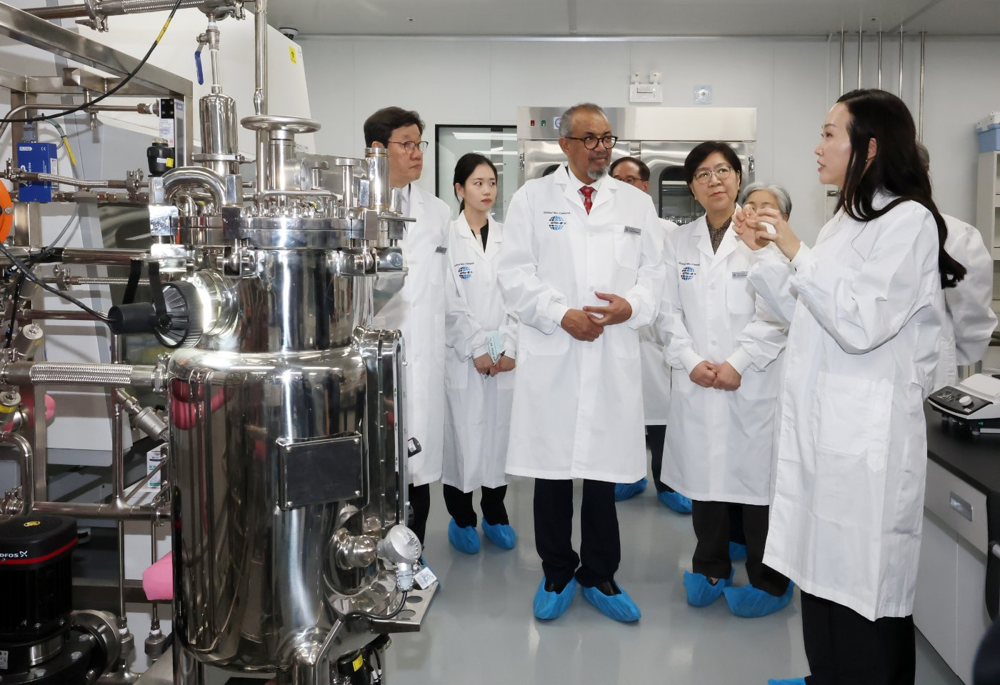

<!doctype html>
<!--
 AI경제저널 뉴스 기사 공용 틀 (2026-10-21, 18 지침 1-3의4 바목 · 소통판 15·16·17항)
 1. 바이라인 「김갑봉 기자」. 머리 .byl 과 끝 .af 기자 칸 둘 다. 기자 칸에 사진 넣지 않는다
 2. 사진 <figure> 의 <figcaption> 에는 사진 설명만. 출처 <span class="cr"> 넣지 않는다. 출처는 맨 아래 [사진 출처] 목록에만
 3. 「경제·AI저널 ○○. 수치는 본문에 적힌 기준일을 따릅니다」 안내 문구, 「전체기사 · 첫 화면」 줄을 넣지 않는다
 4. 해시태그는 꼭 열 개. 본문·참고문헌 칸에 두지 않고 끝 .af 의 <div class="tags"><span>#인천경제자유구역</span><span>#IFEZ</span><span>#청라영상문화복합단지</span><span>#솜시티</span><span>#송도바이오</span><span>#K바이오랩허브</span><span>#글로벌바이오캠퍼스</span><span>#경제자유구역위원회</span><span>#강화남단</span><span>#AI경제저널</span></div></div><header class="mast"><div class="wrap"><div class="lft"></div><div class="title"><h1><a href="/news/"><span class="lat">AI</span>경제저널</a></h1><span class="en">AI ECONOMY JOURNAL</span><span class="slo">일하는 사람들의 전문지</span></div><div class="rgt">발행 경세제민 AI·경제연구소(주)<br>창간 준비호</div></div></header><nav class="gnb"><div class="wrap"><a class="all" href="/news/s.html?k=전체">전체기사</a><a href="/news/s.html?k=인천경제">인천경제</a><a href="/news/s.html?k=경제">경제</a><a href="/news/s.html?k=교통경제">교통경제</a><a href="/news/s.html?k=해양">해양</a><a href="/news/s.html?k=항공">항공</a><a href="/news/s.html?k=도시·부동산">도시·부동산</a><a href="/news/s.html?k=지방자치">지방자치</a><a href="/news/s.html?k=기후·에너지">기후·에너지</a><a href="/news/s.html?k=AI">AI</a><a href="/news/s.html?k=국제">국제</a><a href="/news/s.html?k=학술">학술</a><a href="/news/s.html?k=기획연재">기획연재</a><span class="tools"><form class="sch" action="/news/s.html" method="get" role="search"><input type="search" name="q" placeholder="기사 검색" aria-label="기사 검색"><button type="submit">검색</button></form><a class="tip" href="/news/tip.html">제보</a><a class="join" href="/news/member.html">후원하기</a></span></div></nav></div>
<article class="art"><div class="wrap">
 <div class="kick">인천경제</div>
 <h1>청라 영상단지 준공 2031년으로 4년 늦춰…IFEZ, 콘텐츠·바이오로 판 짠다</h1>
 <div class="byl"><span class="nm">김갑봉 기자</span><span class="dt">입력 2026.11.04</span><span class="dt">업데이트 2026.11.04 21:22</span></div>
<div class="toolsbox"><div class="tools" role="toolbar" aria-label="기사 도구"><button type="button" data-a="fs" title="글자 크기" aria-label="글자 크기">가</button><button type="button" data-a="save" title="저장" aria-label="저장"><svg viewBox="0 0 24 24"><path d="M6 3h12v18l-6-4-6 4z"/></svg></button><button type="button" data-a="print" title="인쇄" aria-label="인쇄"><svg viewBox="0 0 24 24"><path d="M7 8V3h10v5M7 17H4v-7h16v7h-3M7 14h10v7H7z"/></svg></button><button type="button" data-a="share" title="공유" aria-label="공유"><svg viewBox="0 0 24 24"><circle cx="18" cy="5" r="2.5"/><circle cx="6" cy="12" r="2.5"/><circle cx="18" cy="19" r="2.5"/><path d="M8.2 10.8l7.6-4.4M8.2 13.2l7.6 4.4"/></svg></button></div></div>
 <div class="subs"><p>송도엔 WHO 바이오 실습교육장·랩허브, 인력양성은 중·저소득국 몫</p><p>솜시티 다음 관문은 PFV 설립, 일자리는 아직 계획 단계</p></div>
 <div class="body">
<p><span class="dl">AI경제저널=김갑봉 기자 |</span> 인천경제자유구역청이 청라 영상단지와 송도 바이오를 앞세워 투자유치 판을 다시 짠다. 인천경제청은 4일 K-콘텐츠와 바이오 중심으로 미래산업 기반을 넓히겠다고 밝혔다.</p>
<p>다만 핵심 사업인 청라영상문화복합단지(솜 시티)의 준공 목표는 2027년 12월에서 2031년 12월로 4년 미뤄졌다. 송도 바이오는 생산 위주에서 인력양성과 창업으로 넓힌다.</p>
<figure><figcaption>10월 20일 송도 연세대 국제캠퍼스에서 열린 글로벌 바이오 캠퍼스 실습교육장 개소식에서 참석자들이 실습 설비를 둘러보고 있다. 사진=인천경제청(공공누리 제1유형)</figcaption></figure>
<p>솜 시티 개발계획 변경안은 10월 19일 산업통상부 제149차 경제자유구역위원회에서 원안가결됐다. 대상지는 서해구 청라동 투자유치 5-4블록 18만8282㎡다. 이 가운데 12만5773㎡가 콘텐츠 산업용지, 5만3824㎡가 업무시설용지가 된다.</p>
<h2>청라, 스튜디오·오픈세트로 K-콘텐츠 거점</h2>
<p>인천경제청은 이곳에 실내외 스튜디오와 오픈세트, 미디어센터 같은 영상 제작시설을 모을 계획이다. 콘텐츠 지식재산권(IP)을 활용한 문화·관광시설도 함께 짓는다. 2027년 개장을 목표로 하는 스타필드 청라와 묶어 관광 효과를 낸다는 구상이다.</p>
<p>산업통상부 설명으로는 이번 변경에 글로벌 영상 제작 증가와 정부의 K-콘텐츠 육성 정책이 담겨 있다. 경제자유구역위원회는 같은 날 강원 망상지구와 광양만권 갈사만조선산업단지의 사업기간 연장도 함께 의결했다.</p>
<h2>송도, 바이오 생산에서 인력양성·창업으로</h2>
<p>송도에서는 바이오 기반 시설이 잇달아 서고 있다. 9월 30일 연세대 국제캠퍼스에서 바이오 창업기업을 키우는 K-바이오 랩허브가 착공했다. 10월 20일에는 세계보건기구(WHO) 글로벌 바이오 인력양성 허브의 실습교육장이 문을 열었다.</p>
<p>실습교육장은 SL바이젠 산학협력관 2층에 있고, 면적은 약 2492㎡다. 미생물 배양·정제·분석과 품질관리를 익히는 실습실이 들어 있다. 개소식에는 테드로스 아드하놈 게브레예수스 WHO 사무총장과 정은경 보건복지부 장관 등 30여명이 참석했다.</p>
<p>인천경제청이 한국은행 인천본부 자료를 인용해 밝힌 2024년 인천의 제약·바이오 생산액은 7조7000억원이다. 전국의 61.8%다. 인천경제청 설명으로는 송도 바이오 생산설비가 116만ℓ로 단일 도시 기준 세계 최대 수준이다.</p>
<h2>IFEZ 계획이 인천 일하는 사람에게 말하는 것</h2>
<p>첫째, 청라 영상단지는 아직 첫 삽 전이다. 인천경제청이 밝힌 다음 절차는 산업통상부 고시, 기본협약 체결, 프로젝트금융투자회사(PFV) 설립, 실시계획 인허가 순이다. 사업 주체가 될 PFV가 아직 서지 않았다. 일자리를 말하기에는 이른 단계다.</p>
<p>둘째, 시간이 빠듯하다. 인천경제청 스스로 그동안 추진이 지연된 사업이라고 밝혔다. 2031년 목표를 지키려면 남은 5년 안에 투자자 모집과 인허가, 공사를 모두 끝내야 한다.</p>
<p>셋째, 송도 실습교육장의 교육 대상은 인천 청년이 아니다. 이 시설의 목적은 중·저소득국의 백신·바이오의약품 생산인력 양성이다. 인천경제청은 교육훈련 운영에 2024년부터 2028년까지 90억원을 지원한다. 시설과 장비는 국비로 짓는다.</p>
<p>넷째, 인천 바이오의 무게가 한곳에 쏠려 있다. 전국 생산의 61.8%가 인천에서 나온다. 송도의 생산 기반이 그만큼 단단하다는 뜻이고, 인천 경제가 바이오 경기에 크게 기댄다는 뜻이기도 하다. 연구개발과 창업 기능을 더하겠다는 계획이 그래서 중요하다.</p>
<p>다섯째, 숫자로 본 IFEZ는 이미 큰 일터다. 인천경제청 자료를 보면 2024년 말 입주 사업체는 3860곳, 종사자는 12만2832명이다. 매출액은 113조2602억원이다. 새 사업이 더할 일자리는 아직 계획 속에 있다. 착공과 입주가 실제로 이뤄지는지 따라가 볼 일이다.</p>
<h2>강화남단·2차 발전계획은 12월 보고</h2>
<p>인천경제청은 강화군 길상면·화도면 6.32㎢를 경제자유구역으로 새로 지정하는 일도 함께 추진한다. 2035년까지 약 3조1000억원을 들이는 구상이다. 이를 담은 제2차 인천경제자유구역 발전계획은 12월 최종 보고회 뒤 산업통상부에 낸다.</p>
<p>김종철 인천경제자유구역청장은 9월 18일 취임식에서 개발 중심의 투자유치를 넘어 전략적 투자유치로 전환해야 할 때라고 말했다. 기업의 기술과 자본이 대학·연구기관·창업가와 이어져 일자리로 가는 생태계를 만들겠다고도 했다.</p>
<div class="refs" style="overflow-wrap:anywhere"><h3>참고문헌</h3><ul>
<li>인천경제자유구역청 미디어문화과(2026). 인천경제청, K-콘텐츠·바이오 중심 미래산업 기반 확대(보도자료). 2026년 11월 4일.</li>
<li>인천경제자유구역청 서비스산업유치과(2026). 인천경제청, SOM CITY 개발계획 변경... K-콘텐츠 복합 클러스터 조성 탄력(보도자료). 2026년 10월 20일. <a href="https://www.ifez.go.kr/main/pst/view.do?pst_id=noti03&pst_sn=671023" target="_blank" rel="noopener">https://www.ifez.go.kr/main/pst/view.do?pst_id=noti03&amp;pst_sn=671023</a></li>
<li>인천경제자유구역청 혁신성장도시과(2026). 송도에 글로벌 바이오 캠퍼스 실습교육장 문 열어... 국제 바이오 인력양성 거점 강화(보도자료). 2026년 10월 20일. <a href="https://www.ifez.go.kr/main/pst/view.do?pst_id=noti03&pst_sn=671024" target="_blank" rel="noopener">https://www.ifez.go.kr/main/pst/view.do?pst_id=noti03&amp;pst_sn=671024</a></li>
<li>산업통상부 경제자유구역기획단(2026). 강원 망상, 글로벌 휴양 도시로 탈바꿈(제149차 경제자유구역위원회, 보도자료). 2026년 10월 19일. <a href="https://eiec.kdi.re.kr/policy/materialView.do?num=288277" target="_blank" rel="noopener">https://eiec.kdi.re.kr/policy/materialView.do?num=288277</a></li>
<li>인천경제자유구역청(2026). 글로벌 바이오 캠퍼스 실습교육장 개소(행사사진). 2026년 10월 20일. <a href="https://www.ifez.go.kr/promote/pst/view.do?pst_id=event_photo&pst_sn=671030" target="_blank" rel="noopener">https://www.ifez.go.kr/promote/pst/view.do?pst_id=event_photo&amp;pst_sn=671030</a></li>
</ul><h4>[사진 출처]</h4><ul><li>[사진1] 인천경제자유구역청 행사사진 「글로벌 바이오 캠퍼스 실습교육장 개소」(2026.10.20.), 공공누리 제1유형, https://www.ifez.go.kr/promote/pst/view.do?pst_id=event_photo&pst_sn=671030</li></ul></div>
</div>
 <div class="af">
<h3>관련기사</h3><ul class="rel"><li><a href="kgz01.html">강화남단 경제자유구역, 지정 요청 11개월째…2차 발전계획에 담는다</a></li><li><a href="icgb01.html">인천시 &quot;국비 1306억 더&quot;…노동감독관 인건비·인천e음·M버스</a></li><li><a href="gdlc01.html">검단 근로자복합문화센터 문 열어…월 1만원 강좌, 평일 밤 9시까지</a></li></ul>
<div class="by"><div class="who"><b>김갑봉 기자</b><span>weminaimax@weminai.com</span></div><a class="more" href="/news/s.html?k=전체">다른기사 보기</a></div>
<div class="tags"><span>#노동교육</span><span>#노동인권교육</span><span>#한국고용노동교육원</span><span>#인천시교육청</span><span>#청소년아르바이트</span><span>#근로계약서</span><span>#임금체불</span><span>#직업계고</span><span>#플랫폼노동</span><span>#AI경제저널</span></div>
<p class="copy">저작권자 © AI경제저널 무단전재 및 재배포, AI학습 및 활용 금지</p></div>
</div></article>


<div class="nf"><footer class="nff"><div class="wrap"><div class="pub"><a href="/news/">AI경제저널</a></div><div class="meta">발행 경세제민 AI·경제연구소(주) (Gyeongsejemin AI &amp; Economic Research Institute Co., Ltd.) · 발행인 김효진 · 편집인 김효진<br>(22180) 인천광역시 미추홀구 수봉남로24번길 74 · 사업자등록번호 170-86-04032 · 032-777-0421 · weminaimax@weminai.com<br>청소년보호책임자 김갑봉 · 032-777-0421 · weminaimax@weminai.com</div><div class="links"><a href="/news/about.html">매체소개</a><a href="/news/s.html?k=전체">전체기사</a><a href="/news/reader.html">독자참여</a><a href="/news/ethics.html">윤리강령</a><a href="/news/code.html">편집규약</a><a href="/news/corrections.html">정정·반론</a><a href="/news/tip.html">제보하기</a><a href="/news/member.html">후원하기</a><a href="/news/privacy.html"><b>개인정보 처리방침</b></a></div><div class="copy">자료의 글과 그림은 연구소의 지적재산입니다. 무단 복사·전재·재배포를 금합니다. 인용할 때는 출처(AI경제저널, news.weminai.com)를 반드시 밝혀 주십시오.</div></div></footer></div>
<script>(function(){var d=new Date(),w="일월화수목금토";var e=document.getElementById("today");if(e)e.textContent=d.getFullYear()+"년 "+(d.getMonth()+1)+"월 "+d.getDate()+"일 "+w[d.getDay()]+"요일";})();</script>
<script src="../nocopy.js"></script>
</body></html>